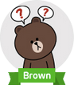
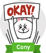
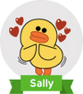

Moon
Moon is Brown's best buddy. They went to high school together and he has gone through everything a typical guy would have gone. He slept in class, he struggled through puberty and crushed on his first love before ultimately getting rejected. He hunted for jobs and had failed many times before he was finally accepted into a company by Boss. He struggled with his weight and had to go through a strict diet and exercise discipline while juggling his life as a salaryman. He has anger management issues and has picked a fight with Brown, James and Sally. But through all his dedication and hard work, he managed to get promoted as a section chief.
Brown
Brown is Moon's highschool friend and best buddy. He tend to be the passive one amongst the group. Poker face is his trademark as he can keep his face emotionless no matter what the situation is. Whether he is happy, sad, angry or embarrased, his face remains unchanging. He began dating Cony, who is quite a contradiction to his character. He is shown to be working in the same company as Moon and often accompanies him to Friday night outs. He is also a friend to Sally, with whom Cony feels rivalry against at times.
Cony
Cony is a hyperactive working girl and is often seen very expressive of her feelings. She is Jessica's bestfriend and also works under the supervision of Boss. Her life motto is "work hard, play harder". She appears to be less graceful and ladylike compared to Jessica but nevertheless still attempts to do her best. She is seen taking selfies at work, going on veggie diet, exercising, doing chores and going broke. But she's also seen shopping, partying, relaxing and spending quality time with her boyfriend, Brown. At times, she gets jealous of Brown and Sally's companionship but at the end of the day, Brown proves his love for her.
James
James is often regarded as the solo flyer. He appears to be content in his own world and is quite narcissistic. He obsesses over his own looks and believes that women are falling head over heels for him. He is a combination of creepy and pervert at the same time. However, it doesn't seem to bother him that he is detached from the rest of the Line characters and is quite satisfied with the way he lives. At times, he appears to be lonely or lovesick but all that is short-lived. When he is alone, he is seen nesting on his couch, picking his nose and/or butt or taking a dump. It's either you hate him or love him.
Jessica
Jessica is Cony's bestfriend. She is a very feminine and graceful lady. She is very independent and capable. She seems to handle everything you throw at her with ease without losing her poise. She can do office work, cooking, and household chores in elegance. She is Cony's partner-in-crime and is always there for Cony when she is down. She is very fashionable and enjoys shopping especially when there is sale. She usually appears composed and charming but she's not one you'd want to mess up with; both Moon and James can attest to that.
Sally
Sally is a yellow duck who is friends with Edward and Leonard. She is also seen keeping Brown company and at times, appears to show affection towards Brown. Her role is usually the neglected or forgotten duck. She is seen singing in the streets with Brown playing the guitar to make money. She is also always seen as the third wheel between Brown and Cony and is sometimes tasked to take their lovey dovey pictures. She is the character who most often tags along with Brown and Cony.
Edward
Edward is a green worm who likes to eat apples and leaves. He is Sally's friend and often accompanies Sally in expeditions. He is very cheerful and is always present in happy situations. He is often seen wearing his trademark red cap and is almost never without it. Due to being a worm, Cony appears to be scared of him. Hence, they don't usually appear together on the stickers.
Boss
Boss is everyone's boss at work. He is the typical strict boss and is generally disliked by everybody. He has a huge bulging stomach and is balding on the top of his head. He indulges himself in alcohol and rated magazines. He appears to be jealous of the friendships that his workers have with one another, which is probably why he treats them the way he does. But despite being a boss at work, his wife seems to be the boss of him at home.
Leonard
Leonard is a frog from Line Bubble. He is friends with Sally and Edward and occasionally appears with the rest of the group. Little is known about him except for that he can accompany you on rainy days. Despite being a frog, he appears to dislike rain as he is seen holding an umbrella under the rain with an upset expression.